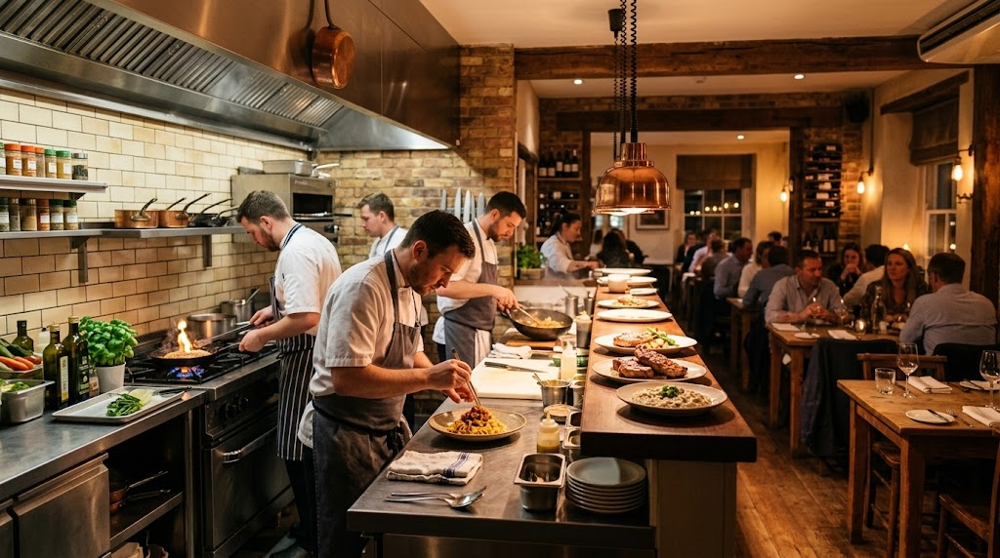

Chi siamo
Un'osteria di quartiere con la cura di un ristorante: servizio attento, prezzi onesti, tavoli dove ci si ferma volentieri.

La nostra cucina
Partiamo da ricette della tradizione italiana e le cuociamo con ingredienti di stagione. Il menù è breve di proposito: meno piatti, fatti meglio.
La carta dei vini privilegia cantine italiane indipendenti, con alcune bottiglie anche al calice.
Le persone
In cucina e in sala lavora una squadra affiatata. Se hai allergie o esigenze alimentari, dillo al momento della prenotazione: ci organizziamo in anticipo.